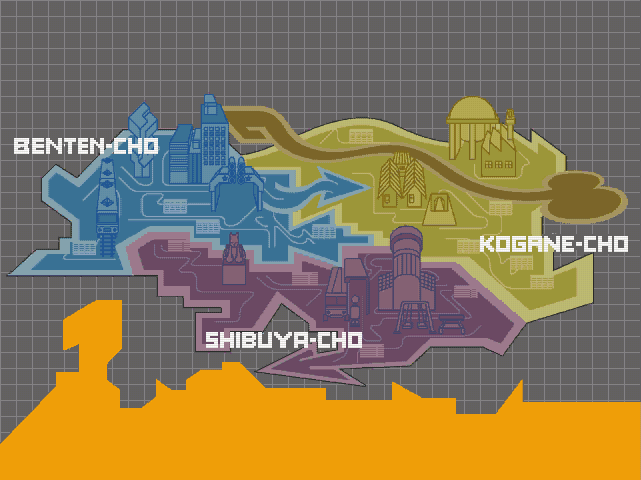
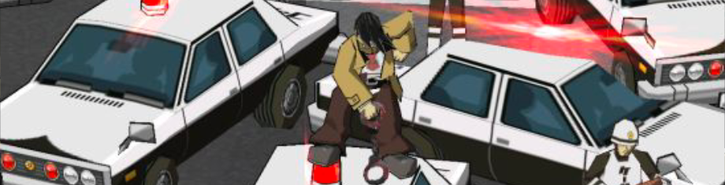
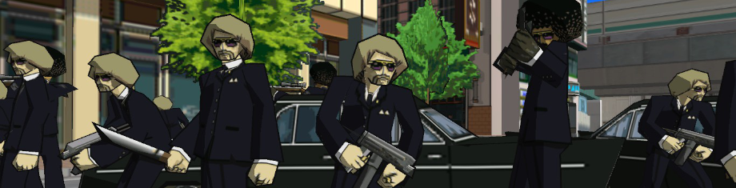
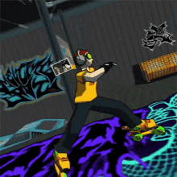

story
WELCOME TO TOKYO-TO!
Jet Set Radio takes place in a fictional place called Tokyo-to, inspired by the real Tokyo, and is all narrated by the great radio host of Jet Set Radio, DJ Professor K. Tokyo-to's infested with graffiti-loving skaters, and they’re called Rudies.
The story starts with a group of Rudies called the GG’s.
They’re formed of Beat (the main character, of which you play as), Gum, Tab, and their dog, Pots.
The GG’s compete with rival groups in order to gain territory.
Enemy groups such as:
A group claims their territory by painting the turf in graffiti. Although each group is competing against one another, they all have one common enemy, the police force of Tokyo-to.
They’re the biggest threat, chasing down any skater they see in their path.
The chief of police is Captain Onishima, and he plans to take down the gangs by any means possible. As you paint the town as Beat, you’re threatened with military armaments such as tanks, bombs, helicopters, and guns.
You prove to the police force and the world that graffiti is art, and it must be shown!
As you face all these trials and tribulations, you will come across pieces of a mysterious vinyl record known as the Devil’s Contract. Once you acquire all the pieces, a bigger problem soon arises.... 
As you skate around, you’re accompanied by the great music of Jet Set Radio. The game itself has its own soundtrack, with most of the songs handcrafted to perfection by the one and only Hideki Naganuma.
Will you be the one to beat the rival gangs and survive the pushback of the military?
PUT ON YOUR SKATES AND FIND OUT! 
back to top